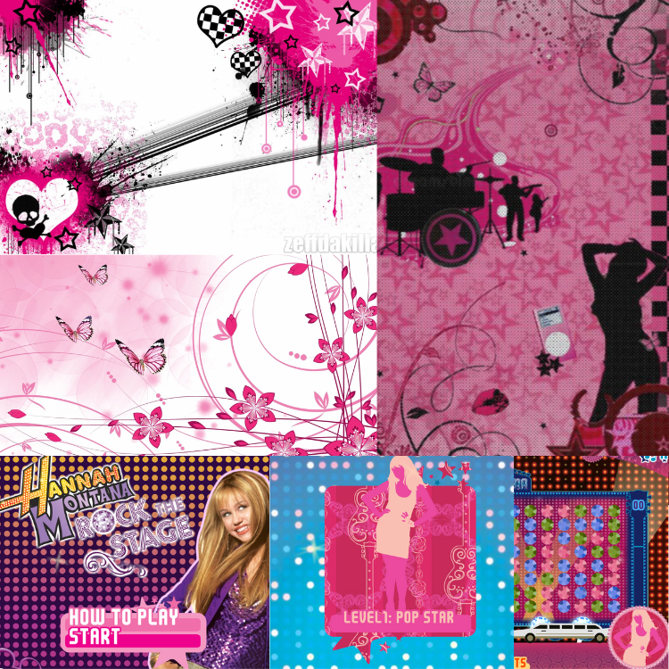

Project Summary
I will be updating my MadLibs project by improving the visual design and functionality to meet the new functionality/ purpose of the Madlib.
Design Process
One aspect of PinkPantheress' vibe and brand is the 2000s style. Their recent music video ,“Nice to Meet You”, has some influence from cyber culture from the 2000s. Some styles were reminiscent of MySpace pages. This reminded me of early online games, specifically Disney Channel Games like Hannah Montana Rock the Stage. The design from these mainly influenced the visual design. The goal was to make it look like an early online game
The original sketches try to include my original ambitions and original style of using their latest album as inspiration. I wanted room for the verses to be on their own page, separated into three. Insead of manifesting in a new page, the buttons were linked to the next section of the verse. This will make me alter my sketches.
One limitation that is anticipated during this project is if my design is too ambitious because it is beyond my knowledge. I am afraid I might not be able to code all of my designs according to the way I have sketched them.
Expert Feedback
- I will get visual critique from one of the tutors and another student not from the class. I will receive another critique from another design professor or Mead.
- I will focus on getting a code review from the graduate student TA and Mead. If times allow I will share it with some other people with Computer Science experience.